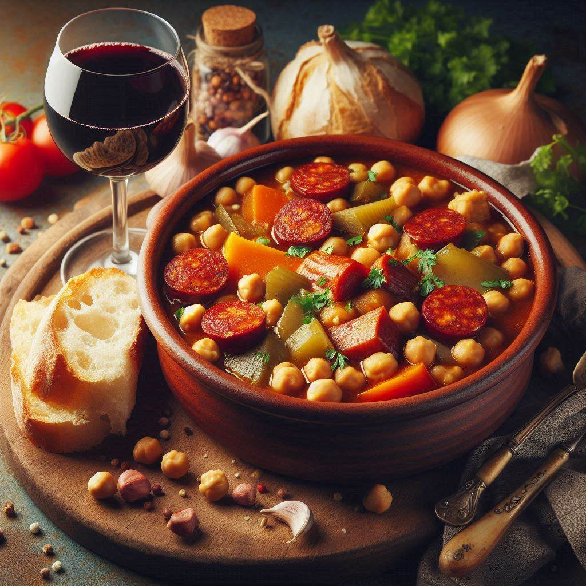

Cocido Madrileño

What Is Cocido Madrileño?
The Cocido Madrileño is a all-in-one meal, perfect for a chilly winter.
Ingredients
-
2 ½ cups dried chickpeas
-
¾ pound beef shank
-
¾ pound chicken thighs
-
¾ pound pork belly
-
2 links chorizo sausage
-
1 beef soup bones
-
1 ham bone
-
salt to taste
-
6 cups cold water, or as needed
-
½ medium head cabbage, thinly sliced
-
4 tablespoons olive oil, or as needed
-
2 cloves garlic, minced
-
½ cup uncooked orzo pasta or other small pasta
Steps
-
Place chickpeas in a bowl and cover with plenty of cold water. Soak for at least 8 hours, or overnight. Drain.
-
Combine beef shank, chicken thighs, pork belly, chorizo, beef bone, and ham bone in a pressure cooker. Cover with cold water and bring to a simmer uncovered. Skim off any foam that rises to the top.
-
Add chickpeas and season with salt. Close cooker securely and place pressure regulator over the vent according to manufacturer's instructions. Heat until steam escapes in a steady flow and makes a whistling sound, about 5 minutes. Adjust temperature until regulator is gently rocking. Cook for 30 minutes.
-
Meanwhile, bring a pot of salted water to a boil over medium-high heat. Add cabbage and simmer for 5 minutes. Strain and set aside.
-
Heat olive oil in a skillet over medium-low heat and cook garlic until fragrant, about 1 minute. Add cabbage, season with salt, and cook until cabbage is tender, 5 to 10 minutes.
-
When cook time for the meat is up, let pressure release naturally according to manufacturer's instructions, 5 to 10 minutes. Unlock lid and remove. Strain meat stock into a saucepan and bring to a boil. Add orzo to the boiling stock and cook, stirring occasionally until tender yet firm to the bite, about 11 minutes.
-
Meanwhile, arrange the cooked meat on a serving platter surrounded by chickpeas. Serve with cabbage on the side.
Back